Загальні поняття Nextcloud Talk
Nextcloud Talk дозволяє вам створювати чати та відео дзвінки на вашому особистому сервері.
Getting started
Chats and calls take place in conversations. You can create any number of conversations. There are different types of conversations:
1. Private (one-to-one) conversations
This is where you have a private chat or call with another Talk user.
In content sidebar, you can find additional information about the person you are chatting with, such as their email address, phone number, or other details they have shared in their profile.

Nobody except you and the other person can see this conversation or join a call in it. You can extend an ongoing call to a new group conversation by adding more people. Call will be continued there without interruption.
{kind=link}
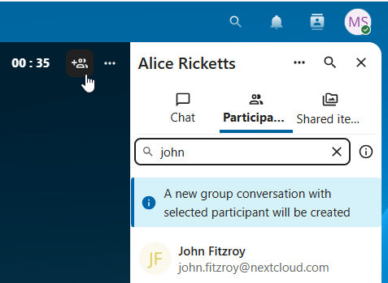
If a user becomes unavailable and set an out-of-office status in Personal settings > Availability, you will find additional information in this conversation, such as provided description, absence date, or their replacement person.
{kind=link}
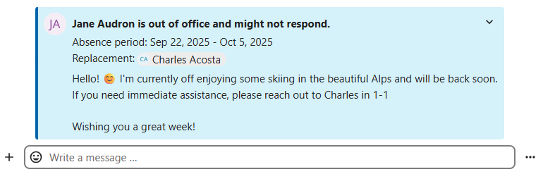
2. Group conversations
A group conversation can have any number of people in it.
You can add internal users, email guests, groups or teams to a group conversation upon creation, or when it already exists, via the Participants tab.
A group conversation can be shared with a public link, so guests can join a chat and a call. It can also be opened to registered users (or users from „Guests“ app), so they can discover and join this conversation.

3. Note to self
This is a special conversation with yourself. Messages here do not have a limit for editing or deletion. You can use it to:
Take notes: write down ideas, reminders, or important information you want to keep handy.
Create to-do lists: use Markdown syntax to create checklists for tasks you need to complete.
Forward messages from other chat: use the message menu to forward important messages from other conversations to your Note to self.

4. Disposable conversations
These conversations cover some special cases and exist for a limited period of time. Retention period can be configured by an instance administration:
Instant meetings: these conversations can be created for quick, ad-hoc meetings. They can be started instantly from the Talk Dashboard.
Event conversations: these are created when set as an event location by Calendar app.
Phone conversations: these are dedicated for SIP dial-in & dial-out phone calls (requires a SIP gateway).
Video verification: these are created, when someone tries to access a public link, protected by password with video verification (deleted instantly after call ends).
{kind=link}
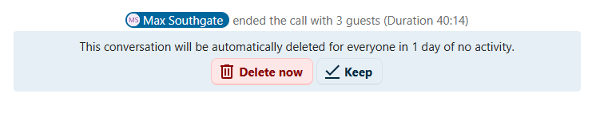
Talk Dashboard
The Talk Dashboard is your central hub for managing and accessing your conversations. It provides an overview of your:
Unread mentions and messages in private chats;
Message reminders, scheduled to be tackled on later;
Scheduled meetings, with event details and shortcut buttons to join them;
Shortcut actions to create new conversations, join open ones, or quickly check your media devices.

Створити чат
You can create a private (one-to-one) chat by searching for the name of a user, a group or a team and clicking it. For a single user, a conversation is immediately created and you can start your chat. For a group or circle you get to pick a name and settings before you create the conversation and add the participants.

Якщо ви хочете створити власну групову бесіду, натисніть кнопку поруч з полем пошуку і фільтрами, а потім на «Створити нову бесіду».
{kind=link}
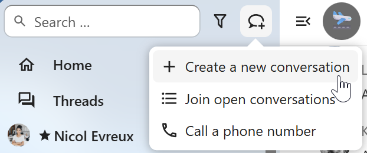
Потім ви можете вибрати назву для бесіди, додати опис і встановити для неї аватар (із завантаженою фотографією або емодзі), а також вибрати, чи буде бесіда відкритою для зовнішніх користувачів і чи зможуть інші користувачі на сервері бачити її і приєднуватися до неї.

На наступному кроці Ви зможете додати учасників та завершити створення розмови.

Після підтвердження ви будете перенаправлені до нової розмови і зможете одразу ж почати спілкування.

Переглянути всі відкриті розмови
Ви можете переглянути всі бесіди, до яких ви можете приєднатися, натиснувши кнопку поруч з полем пошуку і фільтрами, а потім на «Приєднатися до відкритих бесід».

Фільтруйте свої розмови
You can filter your conversations using the filter button next to the search field. There are several options for filtering: 1. Unread mentions: view unread private conversations, or group conversations, where you have been mentioned. 2. Unread messages: view unread messages in all conversations you are a part of. 2. Event conversations: view all conversations, created for upcoming or past events.
{kind=link}
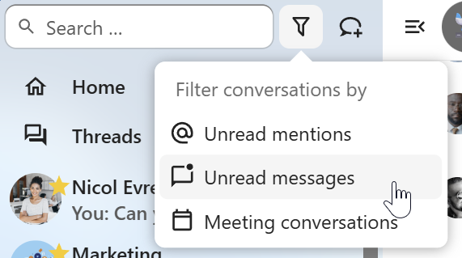
Потім ви можете очистити фільтр у меню фільтрів.

Archive conversations
You can archive conversations that you no longer need to see in your main conversation list. When a conversation is archived, it will be moved to the Archived conversations section.
An archived conversation will not appear in your main conversation list, but it will still align with notification level set in its settings.

The list is accessible from the button at the bottom of the navigation bar.

Поділитися файлами у чаті
Ви можете поділитися файлами у чаті в один з 3х способів.
По-перше, ви можете просто перетягнути їх на чат.
{kind=link}
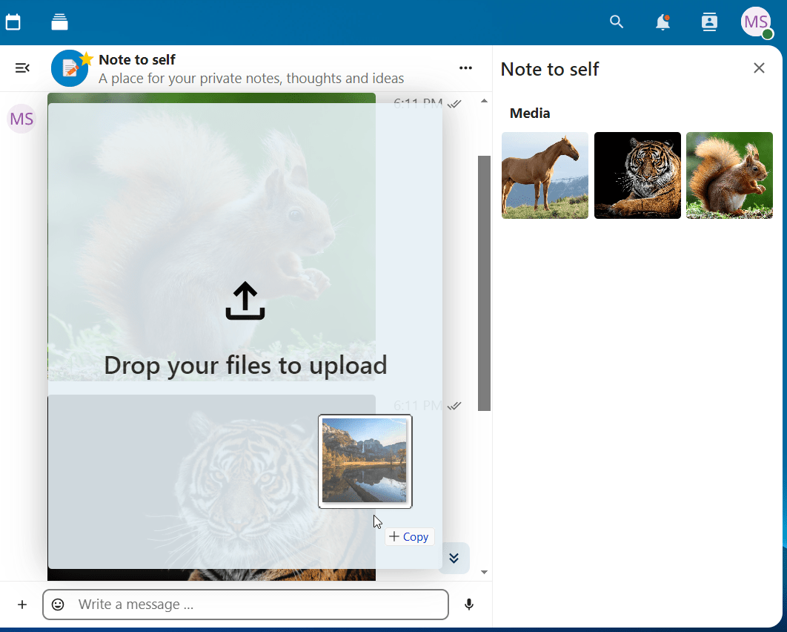
По-друге, Ви можете обрати файл з Ваших Nextcloud Files або файлового менеджеру обравши маленьку скрепку та вибравши звідки Ви хочете додати файл.
{kind=link}
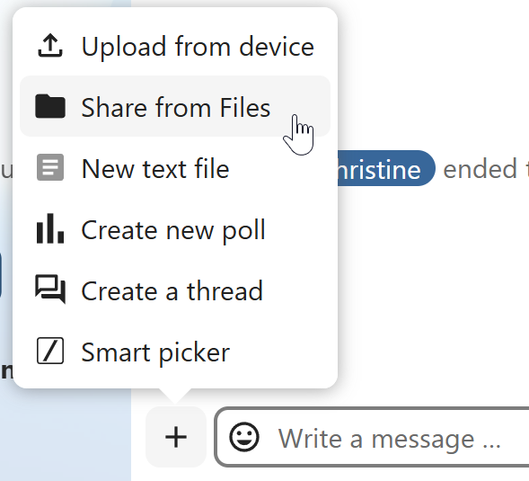
{kind=link}
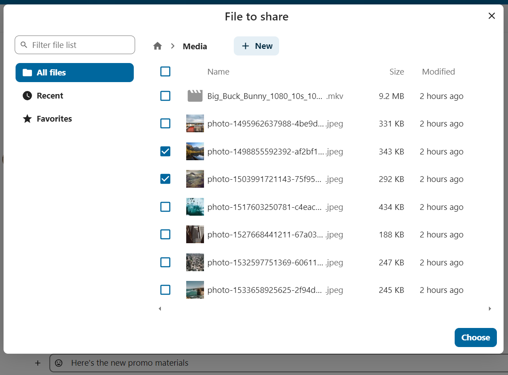
Ви можете додавати нові файли, поки не закінчите і не вирішите поділитися ними. Ви також можете додати текстовий підпис до файлів, до яких ви надаєте спільний доступ, з коротким описом або контекстом.

Усі користувачі будуть у змозі натиснути на файл щоб продивитися його, редагувати або скачати, незалежно від того, чи мають вони обліковий запис. Користувачі з обліковим записом будуть мати змогу автоматично отримати файли якими з ними поділилися, тоді як незареєстровані гості отримають файли як посилання.

Додавання емоційок
Ви можете додавати emoji використовоючи селектор зліва від поля вводу.

Smart Picker
Smart picker shortcut makes it easier to insert links, files, or other content into your conversations. Just choose the type of content you want to insert (files, Talk conversations, Deck cards, GIFs, etc.) You can also type / in the chat input to open the selector.

Редагування повідомлень
Ви можете редагувати повідомлення та підписи до файлообмінників протягом 6 годин після відправлення.
{kind=link}
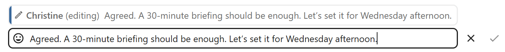
Використовуючи Націнку
Ви можете покращити свої повідомлення за допомогою підтримки синтаксису markdown. Дивіться список для використання:
Заголовки та роздільники
# Heading 1
## Heading 2
### Heading 3
#### Heading 4
##### Heading 5
###### Heading 6
Heading
===
Normal text
***
Normal text
**Вбудовані прикраси
**bold text** __bold text__
*italicized text* _italicized text_
`inline code` ``inline code``
```
.code-block {
display: pre;
}
```
**Списки.
1. Ordered list
2. Ordered list
* Unordered list
- Unordered list
+ Unordered list
**Лапки.
> blockquote
second line of blockquote
Списки завдань
- [ ] task to be done
- [x] completed task
**Таблиці.
Column A | Column B
-- | --
Data A | Data B
Polls in chat
You can create a poll in groups chats from the new message additional actions.

A poll has two settings:
Anonymous polls: Participants cannot see who voted for which option.
Allow multiple choices: Participants can select more than one option.
You can also import polls for auto-fill and export polls as JSON files to save it locally.

Closing poll is possible from the poll dialog.

As a moderator, you can create the poll directly or you can save it as a draft to edit it later.
{kind=link}
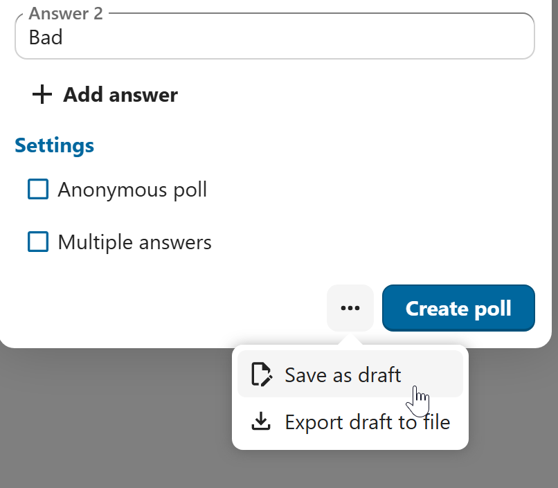
You can find poll drafts in Shared items tab or next to the poll title input field.
{kind=link}
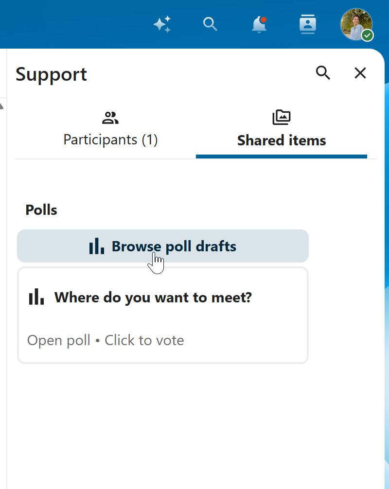
Налаштування нагадування про повідомлення
Ви можете встановити нагадування на певні повідомлення. Якщо є важливе повідомлення, про яке ви хочете отримати сповіщення пізніше, просто наведіть на нього курсор і натисніть на іконку нагадування.

У підменю ви можете вибрати відповідний час, щоб отримати сповіщення пізніше.

Відповідь на повідомлення та інше
Ви может відповісти на повідомлення використовуючи стрілку, яка з’являється при наведенні курсору на повідомлення.

In the ... menu you can also choose to reply privately. This will open a one-to-one chat.

Тут ви також можете створити пряме посилання на повідомлення або відмітити його як не прочитане таким чином чати буде прокручений назад на нього під час наступного входу. Якщо це файл - Ви можете переглянути його в Files/
Мовчазні повідомлення
Якщо ви не хочете нікого турбувати посеред ночі, ви можете скористатися беззвучним режимом чату. Коли він увімкнений, інші учасники не отримуватимуть сповіщення про ваші повідомлення.
{kind=link}
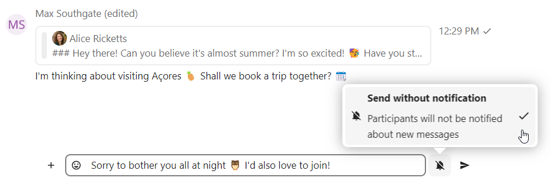
Керування розмовою
Ви завжди є модератором у вашій новій бесіді. У списку учасників ви можете підвищити інших учасників до модераторів за допомогою меню ... праворуч від їхніх імен користувачів, призначити їм спеціальні дозволи або видалити їх із розмови.
Зміна дозволів користувача, який приєднався до загальнодоступної бесіди, також назавжди додасть його до бесіди.

Модератори можуть налаштовувати бесіду. Щоб отримати доступ до налаштувань, виберіть Налаштування бесіди в меню ... бесіди вгорі, щоб отримати доступ до налаштувань.
{kind=link}
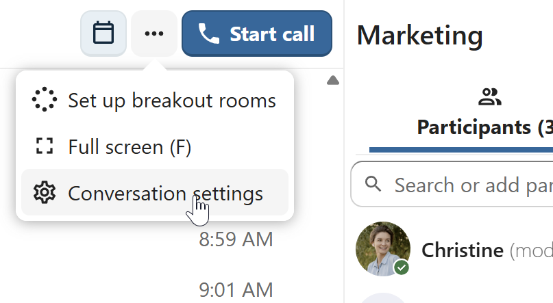
Тут ви можете налаштувати опис, гостьовий доступ, чи буде бесіда видима для інших на сервері тощо.

Ban participants
To help keep discussions safe and under control, moderators can ban participants from conversations. It could be internal users or guests (in this case their IP-addresse will additionally be banned).
In the participants list, select the user or guest you, and click Remove participant.

There, toggle checkbox Also ban from this conversation and provide a reason for the ban. The banned user will be removed and prevented from rejoining.

You can later find the list of banned users in the Moderation section of conversation settings.
Here, you can see the reason for the ban and revert it if needed.

Повідомлення про закінчення терміну дії
Модератор може налаштувати термін дії повідомлень у розділі «Налаштування бесіди» в розділі «Модерація». Як тільки повідомлення досягає свого терміну дії, воно автоматично видаляється з бесіди. Доступні наступні тривалості: 1 година, 8 годин, 1 день, 1 тиждень, 4 тижні або ніколи (за замовчуванням).

Початок дзвінка
Під час розмови ви можете будь-коли почати дзвінок за допомогою кнопки «Почати дзвінок». Інші учасники отримають сповіщення і зможуть приєднатися до виклику.

Якщо хтось інший вже розпочав виклик, кнопка зміниться на зелену кнопку «Приєднатися до виклику».

Під час дзвінка ви можете вимкнути мікрофон і вимкнути відео за допомогою кнопок у правій частині верхньої панелі або за допомогою комбінацій клавіш M, щоб вимкнути звук, і V, щоб вимкнути відео. Ви також можете використовувати пробіл, щоб увімкнути звук. Якщо звук вимкнено, натискання пробілу ввімкне звук, щоб ви могли говорити, доки не відпустите клавішу пробілу. Якщо звук увімкнено, натискання пробілу вимкне звук, доки ви не відпустите його.
Ви можете вимкнути Ваше відео (корисно під час показу екрану) за допомогою маленької стрілки якраз над відео потоком. Щоб повернути його назад - натисніть стрілку ще раз.
Ви можете отримати доступ до своїх налаштувань і вибрати іншу веб-камеру, мікрофон та інші налаштування в меню ... на верхній панелі.

У діалоговому вікні налаштувань мультимедіа ви також можете змінити тло вашого відео.
{kind=link}
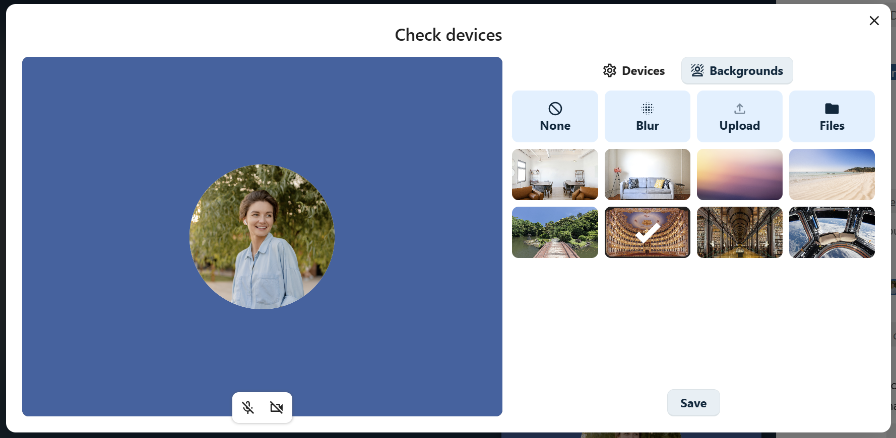
All these settings are also available as direct actions in the bottom bar.
{kind=link}
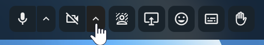
Ви можете змінити інші параметри у діалоговому вікні Параметри розмови.
{kind=link}
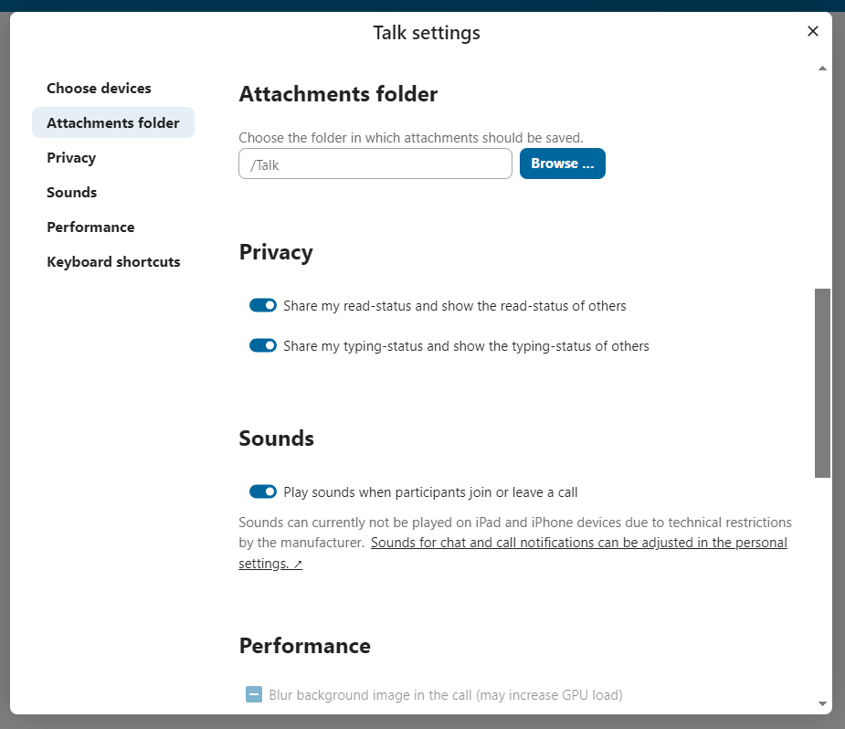
Початок поширення екрану
Ви можете натиснути на іконку монітора у вашому відеопотоці, щоб надати спільний доступ до екрана. Залежно від вашого браузера, ви зможете надати спільний доступ до монітора, вікна програми або окремої вкладки браузера. Якщо відео з вашої камери також доступне, інші учасники побачать його в маленькому вікні доповідача поруч із демонстрацією екрана.

You can zoom in and out of the shared screen with mouse wheel, double click or touchpad gestures.
Зміна вигляду під час дзвінку
You can switch the view in a call in the bottom bar between promoted view and grid view.

The grid view will show as many people as the screen can fit, allowing navigation with buttons on the left and right.

Promoted-view буде покаувати людину, що зараз говорить, великого розміру а інших - у рядок нижче. Якщо люди не вміщуються в екран - з’являться кнопки, що дозволять навігацію.
{kind=link}
Download call participants list
You can download the list of participants in a call from the ... menu in the top bar. This will download a CSV file with the names and email addresses of all participants in the call.

The table in the CSV file contains the following columns:
Name: The name of the participant.
Email: The email address of the participant.
Type: Indicates whether the participant is a registered user or a guest.
Identifier: Unique identifier for the participant.
Compact view of conversations list
Compact view allows to hide last message preview in the conversation list, providing a more focused interface.
You can enable it from the Talk settings dialog in Appearance section.
{kind=link}
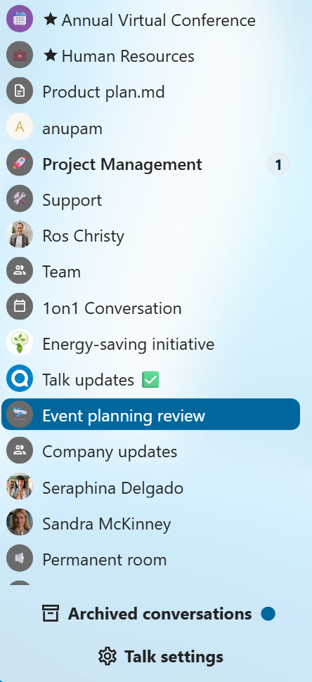
Messages search in a conversation
In addition to global unified search, you can search for messages within a specific conversation. In the content sidebar of a conversation, click the search icon to open the search tab.
{kind=link}
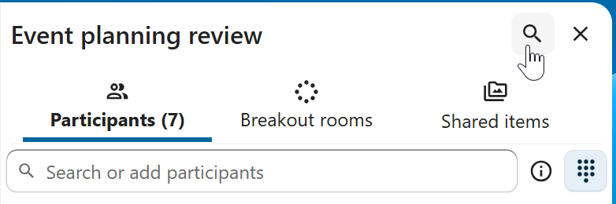
You can narrow down your search by using filters such as date range, and sender.
{kind=link}
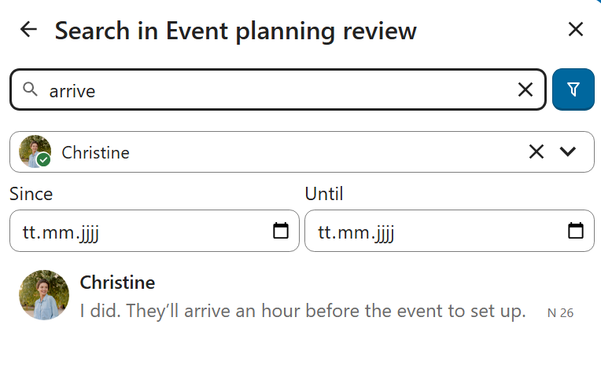
Threaded messages
You can create threads in conversations to keep discussions organized. The thread creation option is available in the new message additional actions.
{kind=link}
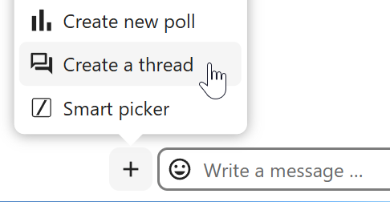
Then, you can add a title and description for the thread and start the discussion.
{kind=link}
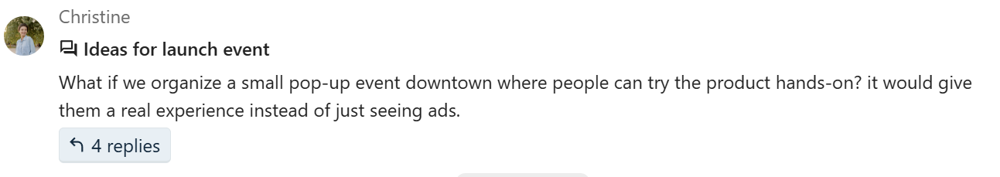
You can view all replies in a thread either from the replies button on the message or from Shared items tab in the content sidebar.
{kind=link}
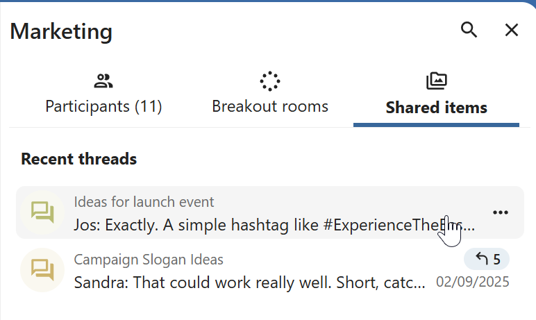
You can subscribe to a thread to receive notifications about new replies. It is possible to subscribe from the thread itself or from the sidebar.
{kind=link}
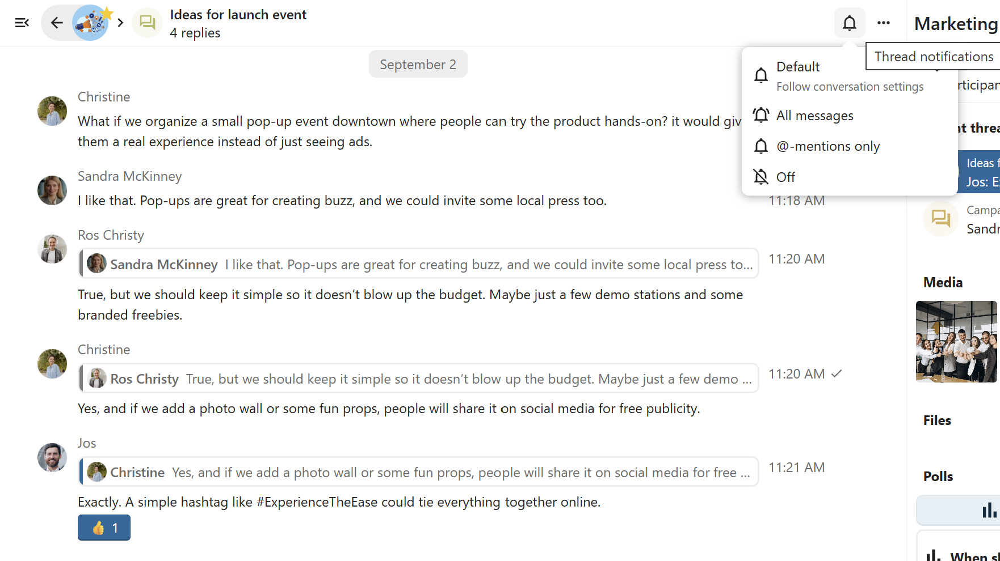
Subscribed threads are easily accessible from the navigation bar in Threads navigation.
{kind=link}
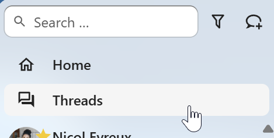
Editing thread title is possible from the thread itself or from the sidebars.